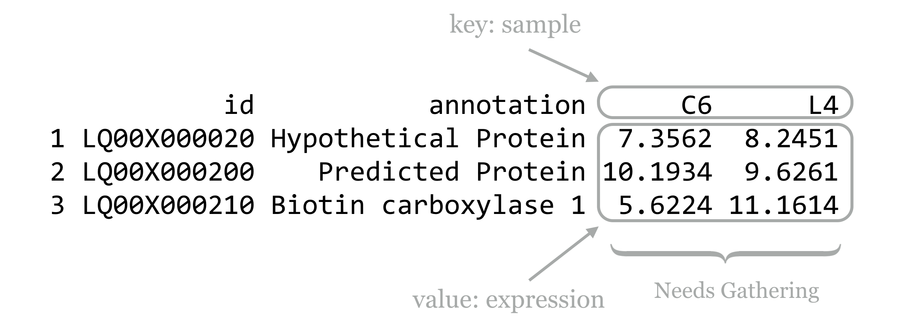
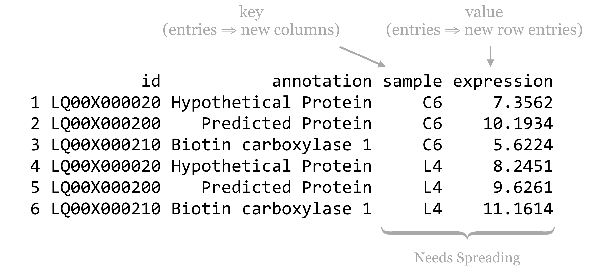

Chapter 37 Reshaping and Joining Data Frames
Looking back at the split-apply-combine analysis for the gene expression data, it’s clear that the organization of the data worked in our favor (after we split the sample column into genotype, treatment, and other columns, at least). In particular, each row of the data frame represented a single measurement, and each column represented a variable (values that vary across measurements). This allowed us to easily group measurements by the ID column. It also worked well when building the linear model, as lm() uses a formula describing the relationship of equal-length vectors or columns (e.g., expr$expression ~ expr$treatment + expr$genotype), which are directly accessible as columns of the data frame.
Data are often not organized in this “tidy” format. This data set, for example, was originally in a file called expr_wide.txt with the following format:
id C6_chemical_A1 C6_chemical_A3 C6_chemical_B1 C6_chemical_B2 ...
LQ00X000020 4.831259 4.784184 5.577741 5.143742 ...
LQ00X000200 14.046963 14.045607 14.448088 14.927930 ...
LQ00X000210 12.546436 12.410848 12.566147 12.638267 ...
LQ00X000280 10.002939 10.162578 9.425349 9.774258 ...
LQ00X000290 11.930745 10.757338 11.769187 12.391130 ...
LQ00X000300 5.146014 5.386916 6.048761 5.263776 ...
...
Data formats like this are frequently more convenient for human readers than machines. Here, the id and annotation columns (the latter not shown) are variables as before, but the other column names each encode a variety of variables, and each row represents a large number of measurements. Data in this “shape” would be much more difficult to analyze with the tools we’ve covered so far.
Converting between this format and the preferred format (and back) is the primary goal of the tidyr package. As usual, this package can be installed in the interactive interpreter with install.packages("tidyr"). The older reshape2 package also handles this sort of data reorganization, and while the functions provided there are more flexible and powerful, tidyr covers the majority of needs while being easier to use.
Gathering for Tidiness
The gather() function in the tidyr package makes most untidy data frames tidier. The first parameter taken is the data frame to fix up, and the second and third are the “key” and “value” names for the newly created columns, respectively (without quotes). The remaining parameters specify the column names that need to be tidied (again, without quotes). Suppose we had a small, untidy data frame called expr_small, with columns for id, annotation, and columns for expression in the C6 and L4 genotypes.

In this case, we would run the gather() function as follows, where sample and expression are the new column names to create, and C6 and L4 are the columns that need tidying. (Notice the lack of quotation marks on all column names; this is common to both the tidyr and dplyr packages’ syntactic sugar.)
library(tidyr)
expr_gathered_small <- gather(expr_small, sample, expression, C6, L4)
print(expr_gathered_small)
id annotation sample expression
1 LQ00X000020 Hypothetical Protein C6 7.3562
2 LQ00X000200 Predicted Protein C6 10.1934
3 LQ00X000210 Biotin carboxylase 1 C6 5.6224
4 LQ00X000020 Hypothetical Protein L4 8.2451
5 LQ00X000200 Predicted Protein L4 9.6261
6 LQ00X000210 Biotin carboxylase 1 L4 11.1614
Notice that the data in the nongathered, nontidied columns (id and annotation) have been repeated as necessary. If no columns to tidy have been specified (C6 and L4 in this case), the gather() assumes that all columns need to be reorganized, resulting in only two output columns (sample and expression). This would be obviously incorrect in this case.
Listing all of the column names that need tidying presents a challenge when working with wide data frames like the full expression data set. To gather this table, we’d need to run gather(expr_wide, sample, expression, C6_chemical_A1, C6_chemical_A3, C6_chemical_B1, and so on, listing each of the 35 column names. Fortunately, gather() accepts an additional bit of syntactic sugar: using - and specifying the columns that don’t need to be gathered. We could thus gather the full data set with
expr_gathered <- gather(expr_wide, sample, expression, -id, -annotation)
The gather() function takes a few other optional parameters, for example, for removing rows with NA values. See help("gather") in the interactive interpreter for more information.
Ungathering with spread()
While this organization of the data — with each row being an observation and each column being a variable — is usually most convenient for analysis in R, sharing data with others often isn’t. People have an affinity for reading data tables where many measurements are listed in a single row, whereas “tidy” versions of data tables are often long with many repeated entries. Even when programmatically analyzing data tables, sometimes it helps to have multiple measurements in a single row. If we wanted to compute the difference between the C6 and L4 genotype expressions for each treatment condition, we might wish to have C6_expression and L4_expression columns, so that we can later use vectorized subtraction to compute a C6_L4_difference column.
The spread() function in the tidyr provides this, and in fact is the complement to the gather() function. The three important parameters are (1) the data frame to spread, (2) the column to use as the “key,” and (3) the column to use as the “values.” Consider the expr_gathered_small data frame from above.

Converting this data frame back into the “wide” version is as simple as:
expr_small <- spread(expr_gathered_small, sample, expression)
print(expr_small)
id annotation C6 L4
1 LQ00X000020 Hypothetical Protein 7.3562 8.2451
2 LQ00X000200 Predicted Protein 10.1934 9.6261
3 LQ00X000210 Biotin carboxylase 1 5.6224 11.1614
Because the entries in the “key” column name become new column names, it would usually be a mistake to use a numeric column here. In particular, if we were to mix up the order and instead run spread(expr_gathered_small, expression, sample), we’d end up with a column for each unique value in the expression column, which could easily number in the hundreds of thousands and would likely crash the interpreter.
In combination with group_by(), do(), and summarize() from the dplyr package, gather() and spread() can be used to aggregate and analyze tabular data in an almost limitless number of ways. Both the dplyr and tidyr packages include a number of other functions for working with data frames, including filtering rows or columns by selection criteria and organizing rows and columns.
Splitting Columns
In chapter 35, “Character and Categorical Data,” we learned how to work with character vectors using functions like str_split_fixed() to split them into pieces based on a pattern, and str_detect() to produce a logical vector indicating which elements matched a pattern. The tidyr package also includes some specialized functions for these types of operations. Consider a small data frame expr_sample with columns for id, expression, and sample, like the precleaned data frame considered in previous chapters.
id expression sample
1 LQ00X000020 5.024142 C6_control_A1
2 LQ00X000020 4.646697 C6_control_A3
3 LQ00X000020 4.986592 C6_control_B1
4 LQ00X000020 5.164292 C6_control_B2
5 LQ00X000020 5.348810 C6_control_B3
6 LQ00X000020 5.519393 C6_control_C1
The tidyr function separate() can be used to quickly split a (character or factor) column into multiple columns based on a pattern. The first parameter is the data frame to work on, the second is the column to split within that data frame, the third specifies a character vector of newly split column names, and the fourth optional sep = parameter specifies the pattern (regular expression) to split on.
expr_sample_separated <- separate(expr_sample,
sample,
c("genotype", "treatment", "tissuerep"),
sep = "_")
print(expr_sample_separated)
id expression genotype treatment tissuerep
1 LQ00X000020 5.024142 C6 control A1
2 LQ00X000020 4.646697 C6 control A3
3 LQ00X000020 4.986592 C6 control B1
4 LQ00X000020 5.164292 C6 control B2
5 LQ00X000020 5.348810 C6 control B3
6 LQ00X000020 5.519393 C6 control C1
Similarly, the extract() function splits a column into multiple columns based on a pattern (regular expression), but the pattern is more general and requires an understanding of regular expressions and back-referencing using () capture groups. Here, we’ll use the regular expression pattern "([A-Z])([0-9])" to match any single capital letter followed by a single digit, each of which get captured by a pair of parentheses. These values will become the entries for the newly created columns.
expr_sample_extracted <- extract(expr_sample_separated,
tissuerep,
c("tissue", "rep"),
regex = "([A-Z])([0-9])")
print(expr_sample_extracted)
id expression genotype treatment tissue rep
1 LQ00X000020 5.024142 C6 control A 1
2 LQ00X000020 4.646697 C6 control A 3
3 LQ00X000020 4.986592 C6 control B 1
4 LQ00X000020 5.164292 C6 control B 2
5 LQ00X000020 5.348810 C6 control B 3
6 LQ00X000020 5.519393 C6 control C 1
Although we covered regular expressions in earlier chapters, for entries like C6_control_b3 where we assume the encoding is well-described, we could use a regular expression like "(C6|L4)_(control|chemical)_(A|B|C)(1|2|3)".
While these functions are convenient for working with columns of data frames, an understanding of str_split_fixed() and str_detect() is nevertheless useful for working with character data in general.
Joining/Merging Data Frames, cbind() and rbind()
Even after data frames have been reshaped and otherwise massaged to make analyses easy, occasionally similar or related data are present in two different data frames. Perhaps the annotations for a set of gene IDs are present in one data frame, while the p values from statistical results are present in another. Usually, such tables have one or more columns in common, perhaps an id column.
Sometimes, each entry in one of the tables has a corresponding entry in the other, and vice versa. More often, some entries are shared, but others are not. Here’s an example of two small data frames where this is the case, called heights and ages.
heights
first last height
1 Joe Withermore 5.5
2 Mary O'Leary 5.2
3 Brent Liston 6.1
4 Karen Streeter 5.3
ages
first last age
1 Brent Liston 27
2 Joe Jones 19
3 Karen Streeter 22
4 Chris Peterson 34
The merge() function (which comes with the basic installation of R) can quickly join these two data frames into one. By default, it finds all columns that have common names, and uses all entries that match in all of those columns. Here’s the result of merge(heights, ages):
first last height age
1 Brent Liston 6.1 27
2 Karen Streeter 5.3 22
This is much easier to use than the command line join program: it can join on multiple columns, and the rows do not need to be in any common order. If we like, we can optionally specify a by = parameter, to specify which column names to join by as a character vector of column names. Here’s merge(heights, ages, by = c("first")):
first last.x height last.y age
1 Brent Liston 6.1 Liston 27
2 Joe Withmore 5.5 Jones 19
3 Karen Streeter 5.3 Streeter 22
Because we specified that the joining should only happen by the first column, merge() assumed that the two columns named last could contain different data and thus should be represented by two different columns in the output.
By default, merge() produces an “inner join,” meaning that rows are present in the output only if entries are present for both the left (heights) and right (ages) inputs. We can specify all = TRUE to perform a full “outer join.” Here’s merge(heights, ages, all = TRUE).
first last height age
1 Brent Liston 6.1 27
2 Joe Withmore 5.5 NA
3 Joe Jones NA 19
4 Karen Streeter 5.3 22
5 Mary O'Leary 5.2 NA
6 Chris Peterson NA 34
In this example, NA values have been placed for entries that are unspecified. From here, rows with NA entries in either the height or age column can be removed with row-based selection and is.na(), or a “left outer join” or “right outer join,” can be performed with all.x = TRUE or all.y = TRUE, respectively.
In chapter 35, we also looked at cbind() after splitting character vectors into multicolumn data frames. This function binds two data frames into a single one on a column basis. It won’t work if the two data frames don’t have the same number of rows, but it will work if the two data frames have column names that are identical, in which case the output data frame might confusingly have multiple columns of the same name. This function will also leave the data frame rows in their original order, so be careful that the order of rows is consistent before binding. Generally, using merge() to join data frames by column is preferred to cbind(), even if it means ensuring some identifier column is always present to serve as a binding column.
The rbind() function combines two data frames that may have different numbers of rows but have the same number of columns. Further, the column names of the two data frames must be identical. If the types of data are different, then after being combined with rbind(), columns of different types will be converted to the most general type using the same rules when mixing types within vectors.
Using rbind() requires that the data from each input vector be copied to produce the output data frame, even if the variable name is to be reused as in df <- rbind(df, df2). Wherever possible, data frames should be generated with a split-apply-combine strategy (such as with group_by() and do()) or a reshaping technique, rather than with many repeated applications of rbind().
Exercises
As discussed in exercises in Chapter 36, Split, Apply, Combine, the built-in
CO2data frame contains measurements of CO2 uptake rates for different plants in different locations under different ambient CO2 concentrations.Use the
spread()function in thetidyrlibrary to produce aCO2_spreaddata frame that looks like so:Plant Type Treatment 95 175 250 350 500 675 1000 1 Qn1 Quebec nonchilled 16.0 30.4 34.8 37.2 35.3 39.2 39.7 2 Qn2 Quebec nonchilled 13.6 27.3 37.1 41.8 40.6 41.4 44.3 3 Qn3 Quebec nonchilled 16.2 32.4 40.3 42.1 42.9 43.9 45.5 4 Qc1 Quebec chilled 14.2 24.1 30.3 34.6 32.5 35.4 38.7 5 Qc3 Quebec chilled 15.1 21.0 38.1 34.0 38.9 39.6 41.4 ...Next, undo this operation with a
gather(), re-creating theCO2data frame asCO2_recreated.Occasionally, we want to “reshape” a data frame while simultaneously computing summaries of the data. The
reshape2package provides some sophisticated functions for this type of computation (specificallymelt()andcast()), but we can also accomplish these sorts of tasks withgroup_by()anddo()(orsummarize()) from thedplyrpackage in combination withgather()andspread()fromtidyr.From the
CO2data frame, generate a data frame like the following, where the last two columns report mean uptake for eachType/conccombination:Type conc nonchilled_mean_uptake chilled_mean_uptake 1 Quebec 95 15.26667 12.86667 2 Quebec 175 30.03333 24.13333 3 Quebec 250 37.40000 34.46667 4 Quebec 350 40.36667 35.80000 5 Quebec 500 39.60000 36.66667 6 Quebec 675 41.50000 37.50000 7 Quebec 1000 43.16667 40.83333 8 Mississippi 95 11.30000 9.60000 9 Mississippi 175 20.20000 14.76667 10 Mississippi 250 27.53333 16.10000 ...You’ll likely want to start by computing appropriate group-wise means from the original
CO2data.The built-in data frames
beaver1andbeaver2describe body temperature and activity observations of two beavers. Merge these two data frames into a single one that contains all the data and looks like so:day time temp activ name 1 307 930 36.58 0 beaver2 2 307 940 36.73 0 beaver2 3 307 950 36.93 0 beaver2 4 307 1000 37.15 0 beaver2 5 307 1010 37.23 0 beaver2 ...Notice the column for
name— be sure to include this column so it is clear to which beaver each measurement corresponds!